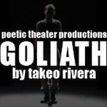
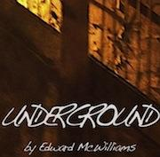
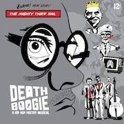
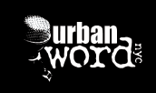
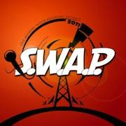
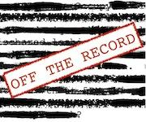
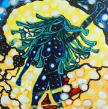
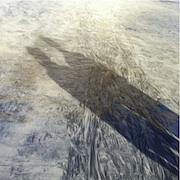
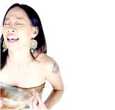
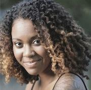

|
GOLIATH
Written by Takeo Rivera, directed by Alex Mallory
Featuring Samantha Cooper, Dontonio Demarco, Natalia Duong, Edgar Eguia, Kenneth Heaton, Monique Paige and Nabil Viñas
Today, as the American military returns home from Iraq and we as a society are trying to comprehend what kind of footprint we've left behind, Goliath provides a way to look deeper into what we do during times of war, what behavior becomes excusable, and what it means to love when violence is part of the norm.
Earlier this year, Goliath had a critically acclaimed run at the Planet Connection Festivity where it received numerous awards including Outstanding Overall Production. Director Alex Mallory (winner, Outstanding Direction) returns to remount Rivera’s heartbreaking and intense spoken-word piece.
“Goliath is one of the rare gifts that theatre bestows upon us — powerful and passionately produced, raising important questions about the world we live in today.” — nytheatre.com
“As beautifully rendered by Rivera, Mallory, and an excellent cast, Goliath is fresh, honestly emotional, heartbreaking, and true.” — Show Showdown
For more about Goliath including a complete list of quotes and awards, click here.
UNDERGROUND
Vignettes from a Manhattan-bound train
Written by Edward McWilliams with additional poetry by D’Janau Morales, Reynaldo (Bamboo MC) Melendez, David Scott, and Daniel Silber-Baker
Directed by Axel Avin Jr., choreography by Ezra Ezzard, assistant direction by Dontonio Demarco
Underground is a new Hip Hop theater piece exploring the politics of the fractured stories of people who ride the A train between Brooklyn and Manhattan. Underground is a guide to the strangers on the train - the people you know and those you thought you knew.
Featuring Makeda Abraham, Keith Alexander, Devon Malik Beckford, Khadim Diop, Karen Eilbacher, David J Goldberg, Osas Ighodaro, Joell Jackson, Ryan F. Johnson, Wade Ray, Tremaine "Trey" Rollins, Ronnetta Renay, Alison Rosenstein, Bharatta Salassie, Bheesma Salassie, David Chapman and Candace Tabbs
DEATH BOOGIE
A Hip Hop Poetry Musical
written and performed by Darian Dauchan
music accompaniment by The Mighty Third Rail, illustrations by David Ayllon, directed by Jennifer McGrath
Death Boogie is a multimedia Hip Hop Poetry Musical that follows the fictional story of Victor Spartan, a blue collar worker who lives a comatose lifestyle by day and at night, hears the poetic sounds of revolution. A political romp with a Pee Wee Herman meets Che Guevara type flare. Through the combination of music and comic book illustrations, Death Boogie is a high energy whimsical examination on the notion of martyrdom, altruism, and courage through the stories of a Greek Titan, a soldier, a prisoner of war, a cheetah, and a child.
“A polished, invigorating spoken-word performance.” — The New York Times
“The flesh-and-blood performance of Dauchan and two-dimensional art blend seamlessly together to create Death Boogie’s unique aesthetic... a passionate piece of theatre that quickens the pulse and stirs the imagination.” — The Mary Sue
Death Boogie Teaser: http://www.youtube.com/watch?v=UyaZRHENpGg
Moments in Words
Presented by Urban Word NYC
Directed and choreographed by Nicco Annan
Featuring Lauren "Lo" Anderson, Marlo Cadore, David Fasanya, Ish Islam, Alexis Marie, and Mokgethi “Mega” Thinane
Moments in Words is a revival of youth produced one act performances, directed and choreographed by Nicco Annan in partnership with Urban Word and New York Live Arts. Moments is a glimpse into the lives, hearts, and minds of six individuals who come face to face with the journey they were born for.
Founded on the belief that teenagers can and must speak for themselves, Urban Word NYC has been at the forefront of the youth spoken word, poetry and hip-hop movements in New York City since 1999. Urban Word NYC presents literary arts education and youth development programs in the areas of creative writing, journalism, college prep, literature and hip-hop.
“The city’s best teenage poets.” — The New York Times
S.W.A.P. 2011: The Spoken Word Almanac Project
"A Year in Review from a Poet's Point of View"Encore Performance!
The Spoken Word Almanac Project 2011 is poetry and media extravaganza recapping the news events of 2011 through an array of perspectives from a diverse group of some of New York's finest performance poets.
Featuring:
Malcolm Barrett, Joanna Hoffman, Darian Dauchan, Adam "ShadoKat" Bowser, Justin Woo, Yarminiah Rosa, Caroline Rothstein, Charan P. Morris, Scott Raven Tarazevits, Erik "Advocate of Wordz" Maldonado
Conceived by Darian Dauchan
Directed by Leah Bonvissuto
Associate Produced by Malcolm Barrett
Media Design by Jeremy Clowe
DJing by Eliel Lucero
Written by The S.W.A.P. 2011 Poets
S.W.A.P. Trailer: http://www.youtube.com/watch?v=BbkxA6fvLrI
THE SECRETS OF NACI-REMA
Presented by The Truth Urban Theater Group
Written and directed by Shadrack Boakye
A piercing lens into the daily lives of ordinary people from different parts of the Globe who take a bite out of the forbidden fruit of life. Find out their secrets through the eyes of a Young Refugee Child Soldier from Uganda.
The Truth Urban Theater Group, otherwise known as "The Truth", is a theater organization based out of Long Island, New York. The performances produced by The Truth give audiences of all ages, races and backgrounds an intimate, visual look at life's grim realities and divine beauty.
www.thetruthurbantheatergroup.org
Featuring Shadrack Boakye, Jemelle Joseph, Karl Davis, Dillon Brown, Crystal Rakia Lewis, Melody Montero and Jorman Quintero
OFF THE RECORD
Written by Akua Doku, Camonghne Felix, Joanna Hoffman & Caroline Rothstein
Directed by Alex Mallory
With opening poetry by Mahogany Browne, Elliott D. Smith and Safia Elhillo
A man sees his dead lover on the subway. An investigative journalist loses her path. A woman struggles to reconcile her identity as a queer veteran. A young girl searches for herself in internet chatrooms. These four lives intersect in Off the Record, a story of identity politics and love in 2012.
FROM ASHES TO ANGEL'S DUST: A Journey Through Womanhood
A Choreodrama by Zoë Flowers
Directed by Chinasa Ogbuagu
Featuring Peggy Johnson, Sherri Pullum, Chantal Maurice and Vesta Walker
Based on Zoë Flowers' Dirty Laundry, a series of candid interviews with women of color who had experienced domestic and sexual violence, From Ashes to Angel's Dust: A Journey Through Womanhood (FA2AD) is a choreodrama that uses monologues; poetry and vignettes to address these issues and provide a forum for discussion and activism through art.
The Ashes Manifesto:
From Ashes to Angel's Dust: A Journey Through Womanhood is for our ancestors that died so that we might live-that starved so we might prosper. It is for those silenced by violence, oppression, homophobia, shame or the impulse to please. This play is for little girls that grow into women looking for fathers in the arms of strange men. It's for all those who ask "why does she stay." This show is for women who recognize that protection, unconditional love and unconditional freedom can occupy the same space. For all who understand that loving another and one's self is a revolutionary act- the most revolutionary act. In short, From Ashes to Angel's Dust is for complicated, simple, uncompromising, weak, independent, gold-digging, hardworking, hard loving, bitchy, vulnerable, strong, happy, and angry women and all those that choose to love us.
Artwork by Damaris.
NEITHER
By Samantha Toh
When 17-year-old Brandon dies unexpectedly, the people in his seemingly happy life wonder what went wrong. As the fragments of his fractured identity begin to collide, his loved one must realize that the comfort they find in each other cannot replace the one they lost.
SAY YOU HEARD MY ECHO
Written by Kelly Zen-Yie Tsai
Directed by Jesse Y. Jou, Performed by Aizzah Fatima, Yalinidream, & Kelly Zen-Yie Tsai, Dramaturgy by Amissa Miller
SAY YOU HEARD MY ECHO is an evening-length spoken word poetry theater project that juxtaposes fictional narratives of three Asian American women in NYC a decade after 9/11. Their struggles with survivorship and faith prompt them to call on three female religious icons (Mary Magdalene, Guan Yin, and Aisha) for solace and answers as they come of age in a world impacted by war. Rendered with humor and humanity, SAY YOU HEARD MY ECHO questions what remains sacred in times of war while unearthing intersections between feminism, Asian Pacific Islander American identity, and religious freedom.
Photo by Berman Fenelus.
FAITH
Written and performed by Caroline Rothstein
Seven years into full recovery from a decade-long eating disorder, writer and performer Caroline Rothstein reflects on navigating the medical world's deadliest mental illness while coming of age in the 1990s. Through monologue, poetry, and performance art, she unleashes her inner and outer turmoil, discovers the depths of her spirit and self, and triumphs when she realizes how much is at stake - not just her physical body, but her soul.
Photo by Jonathan Weiskopf.
FOREIGN BODIES
Written and performed by Eboni Hogan
Poet and performer Eboni Hogan makes her return to theatre to tell the story of her battles with mental and physical illness on a mania-driven trek from NYC to Accra, Ghana. Through monologue and media, Eboni presents an unflinchingly true testament to the complexities of the fragile mind, the breakable body and the resilient heart. |